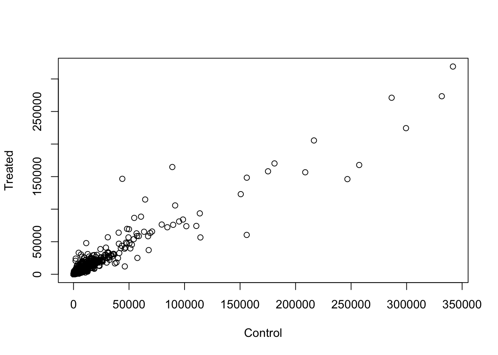
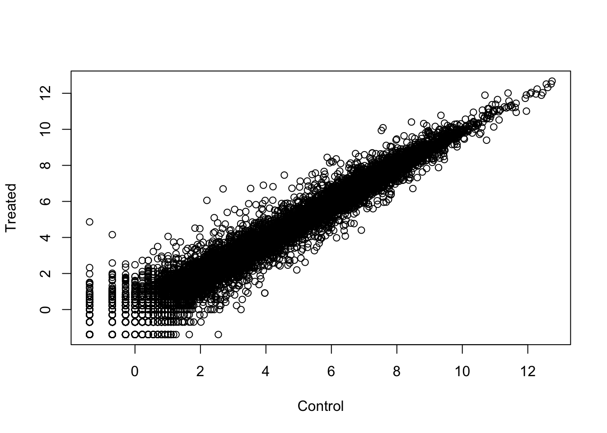
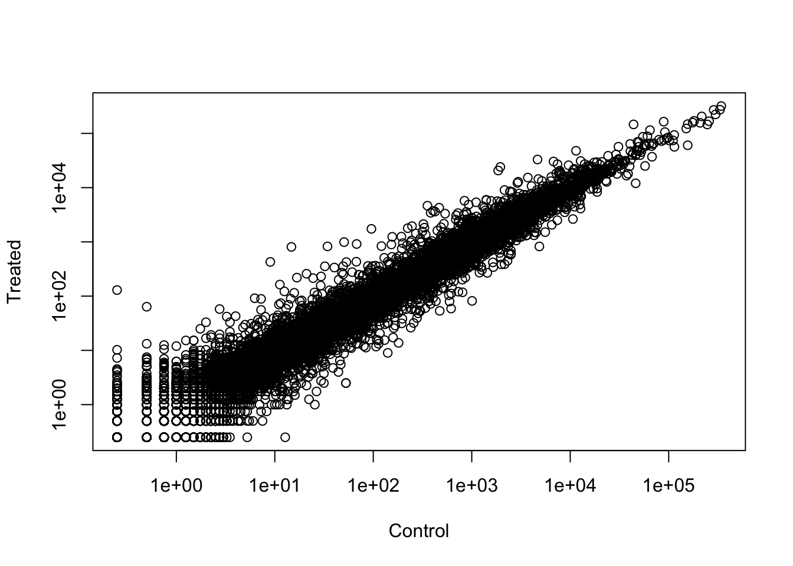
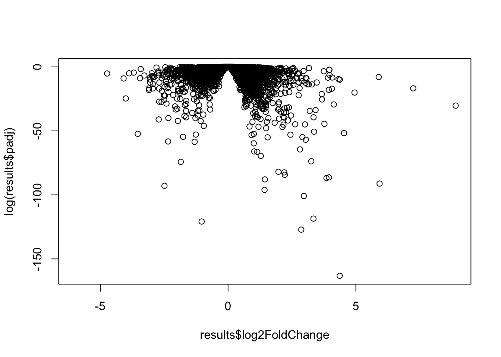
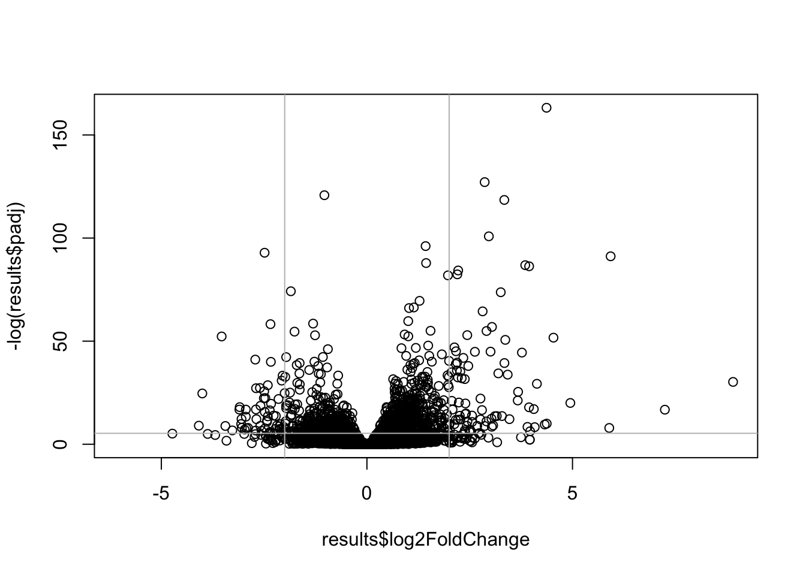
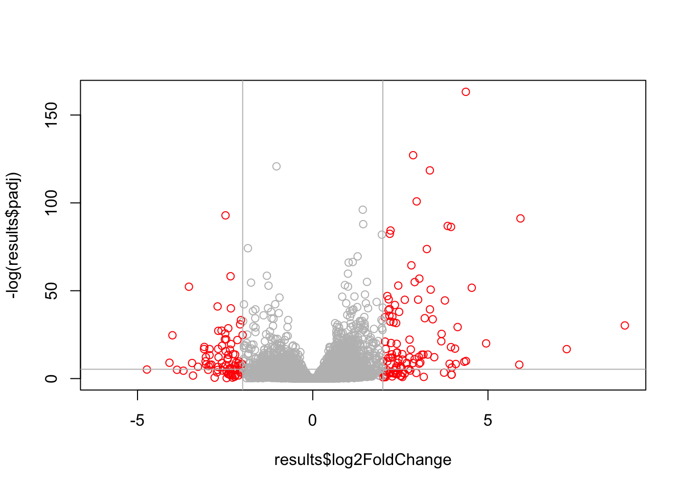
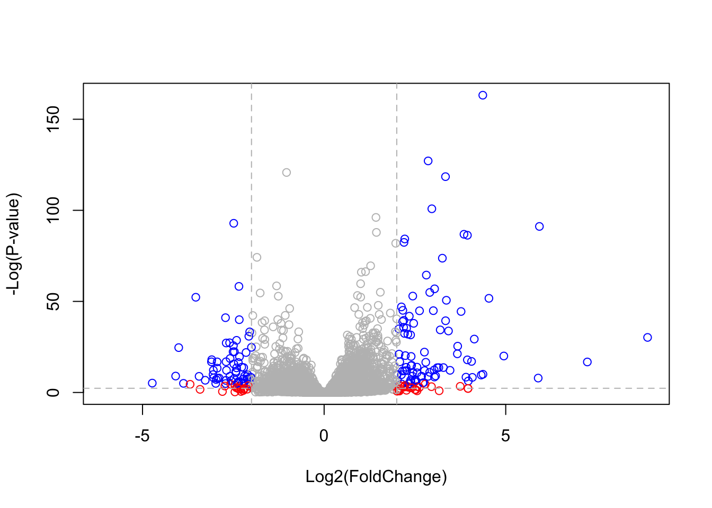

# BiocManager::install("DESeq2")BIMM 143 Lab 13
Today we will analyze some RNASeq data from Himes et al. on the effets of dexamethasone (dex), a syntehtic glucorticoid steroid on airway smooth muscle cells (ASM)!
Download BiocManager in R console
Check installations were executed correctly
suppressMessages(library(BiocManager))
suppressMessages(library(DESeq2))
# suppress message is to hide output messages of download Read data for today and save to variables
counts <- read.csv("airway_scaledcounts.csv", row.names=1)
metadata <- read.csv("airway_metadata.csv")
head(counts) SRR1039508 SRR1039509 SRR1039512 SRR1039513 SRR1039516
ENSG00000000003 723 486 904 445 1170
ENSG00000000005 0 0 0 0 0
ENSG00000000419 467 523 616 371 582
ENSG00000000457 347 258 364 237 318
ENSG00000000460 96 81 73 66 118
ENSG00000000938 0 0 1 0 2
SRR1039517 SRR1039520 SRR1039521
ENSG00000000003 1097 806 604
ENSG00000000005 0 0 0
ENSG00000000419 781 417 509
ENSG00000000457 447 330 324
ENSG00000000460 94 102 74
ENSG00000000938 0 0 0head(metadata) id dex celltype geo_id
1 SRR1039508 control N61311 GSM1275862
2 SRR1039509 treated N61311 GSM1275863
3 SRR1039512 control N052611 GSM1275866
4 SRR1039513 treated N052611 GSM1275867
5 SRR1039516 control N080611 GSM1275870
6 SRR1039517 treated N080611 GSM1275871Question 1
Q1. How many genes are in this dataset?
nrow(counts)[1] 38694Question 2
Q2. How many ‘control’ cell lines do we have?
table(metadata$dex)
control treated
4 4 Toy differential expression analysis
Calculate the mean per gene count values for all ‘control’ samples (ex.columns in ‘counts’) and ‘treated’ so we can compare them and see effect of the drug on patients
Question 3
Q3. How would you make the above code in either approach more robust? Is there a function that could help here?
- Find all ‘control’ values/columns in ‘counts’
control.inds <- metadata$dex == "control"
control.counts <- counts[ ,control.inds]- Find the mean per gene across all control columns
control.mean <- apply(control.counts, 1, mean)
# Alternative way to calculate it:
# control.mean <- rowSums(control.counts) / 4
head(control.mean)ENSG00000000003 ENSG00000000005 ENSG00000000419 ENSG00000000457 ENSG00000000460
900.75 0.00 520.50 339.75 97.25
ENSG00000000938
0.75 Question 4
Q4. Follow the same procedure for the treated samples (i.e. calculate the mean per gene across drug treated samples and assign to a labeled vector called treated.mean)
- Find mean per gene across treated samples
treated.inds <- metadata$dex == "treated"
treated.counts <- counts[ ,treated.inds]
treated.mean <- apply(treated.counts, 1, mean)
# Alternative way to calculate it:
# treated.mean <- rowSums(treated.counts) / 4
head(treated.mean)ENSG00000000003 ENSG00000000005 ENSG00000000419 ENSG00000000457 ENSG00000000460
658.00 0.00 546.00 316.50 78.75
ENSG00000000938
0.00 Question 5a
Q5 (a). Create a scatter plot showing the mean of the treated samples against the mean of the control samples. Your plot should look something like the following. Plot control vs treate means:
# combine both means into a data frame
meanCounts <- data.frame(control.mean, treated.mean)
# plot values
library(ggplot2)
plot(meanCounts, xlab="Control", ylab="Treated") 
# this data looks highly skewed, need to take log to see values more clearly
plot(log(meanCounts), xlab="Control", ylab="Treated") 
plot(meanCounts, log='xy', xlab="Control", ylab="Treated")Warning in xy.coords(x, y, xlabel, ylabel, log): 15032 x values <= 0 omitted
from logarithmic plotWarning in xy.coords(x, y, xlabel, ylabel, log): 15281 y values <= 0 omitted
from logarithmic plot
Most frequently use log2 transformations for this type of data because it makes interpretation of ‘fold-change’ easier • rule-of-thumb in the filed is a log2 fold-change of +2 or -2 where we start to pay attention:
log2(10/10) # get 0 for this, easy to interpret since no difference between sets is represented by 0 [1] 0log2(20/10) # 1 so increase in expression[1] 1log2(10/20) # -1 so decrease in expression[1] -1We see negative values when the treated is lower than control
Let’s calculate the log2(fold-change) and add it to our ‘meanCounts’ data.frame
meanCounts$log2fc <- log2(meanCounts$treated.mean/meanCounts$control.mean)
head(meanCounts) control.mean treated.mean log2fc
ENSG00000000003 900.75 658.00 -0.45303916
ENSG00000000005 0.00 0.00 NaN
ENSG00000000419 520.50 546.00 0.06900279
ENSG00000000457 339.75 316.50 -0.10226805
ENSG00000000460 97.25 78.75 -0.30441833
ENSG00000000938 0.75 0.00 -Inf# give value per gene where if count is 0, both False, 1 is True and False, and 2 is both True)
# the last > 0 makes sure we only get the genes that we want to remove
to.rm <- rowSums(meanCounts[,1:2] == 0) > 0
myCounts <- meanCounts[!to.rm,]How many genes do I have left after this zero count filtering?
nrow(myCounts)[1] 21817Q.How many genes are “up” regulated upon drug treatment at a threshold of +2 log2-fold-change?
- I need to extract the log2fc column
- I need to find those that are above +2
- Count them
sum(myCounts$log2fc > 2)[1] 250Q.How many genes are “down” regulated upon drug treatment at a threshold of +2 log2-fold-change?
sum(myCounts$log2fc < -2)[1] 367WOWWWW hold on, we are missing stats, is this difference in the mean counts significant?
Let’s do this analysis the right way with stats and use the DESeq package:
DESeq Analysis
# DESeq already loaded at the beginning of documentFirst function we will use will set up the data in the way (format) DESeq wants it
dds <- DESeqDataSetFromMatrix(countData = counts,
colData = metadata,
design = ~dex)converting counts to integer modeWarning in DESeqDataSet(se, design = design, ignoreRank): some variables in
design formula are characters, converting to factorsThe function in the package is called ‘DESeq()’ and we can run it on our ‘dds’ object
processed.dds <- DESeq(dds)estimating size factorsestimating dispersionsgene-wise dispersion estimatesmean-dispersion relationshipfinal dispersion estimatesfitting model and testingI will get he results from dds with the ‘results()’ function:
results <- results(processed.dds)
head(results)log2 fold change (MLE): dex treated vs control
Wald test p-value: dex treated vs control
DataFrame with 6 rows and 6 columns
baseMean log2FoldChange lfcSE stat pvalue
<numeric> <numeric> <numeric> <numeric> <numeric>
ENSG00000000003 747.194195 -0.3507030 0.168246 -2.084470 0.0371175
ENSG00000000005 0.000000 NA NA NA NA
ENSG00000000419 520.134160 0.2061078 0.101059 2.039475 0.0414026
ENSG00000000457 322.664844 0.0245269 0.145145 0.168982 0.8658106
ENSG00000000460 87.682625 -0.1471420 0.257007 -0.572521 0.5669691
ENSG00000000938 0.319167 -1.7322890 3.493601 -0.495846 0.6200029
padj
<numeric>
ENSG00000000003 0.163035
ENSG00000000005 NA
ENSG00000000419 0.176032
ENSG00000000457 0.961694
ENSG00000000460 0.815849
ENSG00000000938 NAVolcano Plot
Make a common overall results figure from this analysis, called the volcano plot, it is designed to keep our inner biologist and stats nerd happyyy (plots fold-change vs p-value)
** this is doing a stat test of the ~38 thousand genes, but this is an issue because even a small p value of like 0.5% is a lot of values, so need a more strict p value
# results$log2FoldChange
# results$padjplot(results$log2FoldChange, log(results$padj))
# this plot shows lower values have smaller p-valueslog(0.0005)[1] -7.600902log(0.00000000005)[1] -23.719** values on the extremes are good because they indicate a lot of fold-change and very small p-values**
plot(results$log2FoldChange, -log(results$padj))
abline(v = c(-2,2), col="gray") # create lines to show quadrant
abline(h = -log(0.005), col="gray") # value in log is chosen alpha to show points we care about
Add color to plot:
mycols <- rep("gray",nrow(results))
mycols[abs(results$log2FoldChange) > 2] <- "red"
mycols[results$log2FoldChange < -2] <- "red"
mycols[results$padj < log(0.005)] <- "blue"
# mycols
plot(results$log2FoldChange, -log(results$padj), col = mycols)
abline(v = c(-2,2), col="gray") # create lines to show quadrant
abline(h = -log(0.005), col="gray") # value in log is chosen alpha to show points we care about
Correctly colored graph
# Setup our custom point color vector
mycols <- rep("gray", nrow(results))
mycols[ abs(results$log2FoldChange) > 2 ] <- "red"
inds <- (results$padj < 0.01) & (abs(results$log2FoldChange) > 2 )
mycols[ inds ] <- "blue"
# Volcano plot with custom colors
plot(results$log2FoldChange, -log(results$padj),
col=mycols, ylab="-Log(P-value)", xlab="Log2(FoldChange)" )
# Cut-off lines
abline(v=c(-2,2), col="gray", lty=2)
abline(h=-log(0.1), col="gray", lty=2)
Save my results to date out to disc:
write.csv(results, file = "myResults.csv")We will pick this up next day and add annotation (what are these genes of interest) and do pathway analysis (what biology) are they known to be involved in! :)